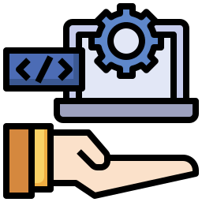

Profissional de TI com formação em Tecnologia em Sistemas para Internet (FAETERJ Barra Mansa) e certificações técnicas em Informática e Eletrônica. Tenho experiência prática em suporte técnico, manutenção de hardware, redes, planejamento e gestão em infraestrutura de TI, adquirida em diferentes ambientes — do setor público à iniciativa privada.
Minha passagem pela Prefeitura de Barra Mansa me deu exposição a ambientes corporativos com demandas reais de suporte, gestão de chamados e manutenção de parque tecnológico. Hoje, aplico esse conhecimento aliado ao desenvolvimento web para entregar soluções completas.
Landing page e e-commerce completo para autopeças em Volta Redonda, RJ. Projeto real com cliente — responsivo, com carrosséis dinâmicos, SEO semântico e backend Node.js + PostgreSQL.
API fullstack com autenticação JWT + bcrypt, CRUD de produtos, carrinho de compras e gerenciamento de pedidos. Arquitetura MVC com PostgreSQL e boas práticas de segurança.
Esta landing page. Design técnico com dark theme, animações CSS, cursor personalizado e layout responsivo. Código limpo, semântico e versionado com Conventional Commits.
Landing page e e-commerce completo para autopeças em Volta Redonda, RJ. Projeto real com cliente — responsivo, com carrosséis dinâmicos, SEO semântico e backend Node.js + PostgreSQL.
Formação superior com foco em desenvolvimento web, banco de dados, redes de computadores, e-commerce e boas práticas de engenharia de software. Tive contato principalmente com HTML, CSS, JavaScript, Node.js e PostgreSQL com visão de produto e mercado digital. Esse perído consolidou a base de conhecimentos adquirida no período da pandemia, onde o meio digital mostrou sua relevância e me despertou o interesse no desenvolvimento de aplicações que facilitassem a vida real.
Realizado de forma concomitante à graduação, aprofundou os conhecimentos em eletrônica analógica e digital, circuitos, componentes e fundamentos de telecomunicações. Consolidou tecnicamente o que já havia sido absorvido na prática ao longo de anos de manutenção de equipamentos eletroeletrônicos.

Cursado simultaneamente à graduação, formalizou e certificou os conhecimentos adquiridos por anos de estudo próprio e prática em manutenção de computadores. Cobriu sistemas operacionais, redes locais, hardware e suporte ao usuário — áreas já dominadas na prática e consolidadas com embasamento técnico formal.
PostgreSQL, Zendesk, Jira Service Management, ITSM, segurança de redes e desenvolvimento fullstack com Node.js.
A experiência com AutoCAD e o raciocínio técnico da construção civil foram determinantes para minha trajetória em TI. O contato com projetos elétricos e de telecomunicações despertou o interesse pela infraestrutura tecnológica e consolidou uma mentalidade operacional voltada para planejamento, precisão e execução de projetos complexos.
No IFRJ, o contato com o curso técnico integrado em Automação Industrial foi meu primeiro mergulho formal na eletrônica digital, um período em que hardware e internet estavam em plena expansão. Esse ambiente despertou o fascínio por como os sistemas funcionam por dentro, abrindo caminho para anos de experimentação com computadores e dispositivos eletrônicos por conta própria.
Período de formação do pensamento crítico e das relações interpessoais. Dos 9 aos 13 anos, desenvolvi habilidades essenciais de comunicação, trabalho em grupo e resolução de conflitos, competências que sustentam até hoje minha abordagem colaborativa e empática no atendimento e suporte a usuários.
Dos 4 aos 9 anos, a escola foi meu primeiro ambiente estruturado de aprendizado e convivência coletiva. Desenvolvi disciplina, curiosidade e o hábito de aprender, que são a base que acompanha toda a minha trajetória profissional e alimentam meu interesse contínuo por novos conhecimentos.
Apresente-se profissionalmente com excelência.
Páginas de apresentação personalizadas para profissionais e
empresas.
Do zero ao ar — design exclusivo, sem templates genéricos.
Ofereço serviços de suporte técnico, infraestrutura e
desenvolvimento web para empresas e profissionais que precisam de
soluções confiáveis. Presencialmente no Sul Fluminense ou de forma
remota.
Tem um projeto, um problema ou uma ideia?
Entre em contato.